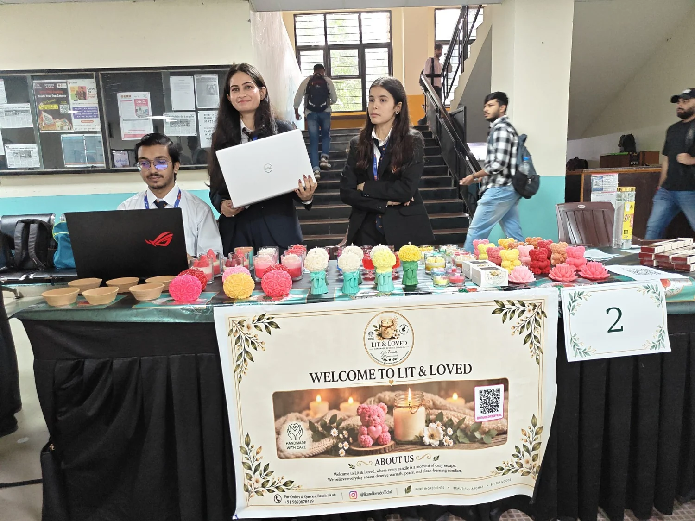

Real products. Real presentation. Real experience.
01 — ENTREPRENEURSHIP / BRAND BUILDING
Lit &
Lit &
Loved.
A handmade scented candle brand developed with a student team. From its warm visual identity to an in-person product showcase, Lit & Loved brought product presentation and customer-facing thinking into practice.
Brand positioningProduct presentationEvent showcaseEntrepreneurship
Explore the brand on Instagram